/ TEACHING — GRADUATION PROJECTS · NILE UNIVERSITY
Graduation studio,
supervised at Nile University.
Final-year architecture graduation projects developed with my supervision at Nile University in 2025, within the Architecture & Urban Design programme (ARUD 408, Graduation Project II). Each student carries an independent thesis from concept and site strategy through to resolved plan, section, structure and render — the work below is entirely their own. The projects are presented below in each student’s own material, and the page grows as more are added.
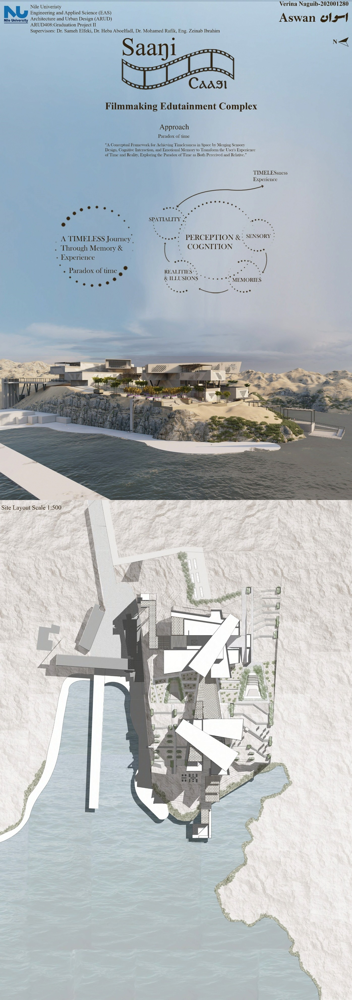
/ OVERVIEW
A new studio, its first theses.
In 2025 I joined the supervising team for graduation projects at Nile University’s Architecture & Urban Design programme (ARUD 408, Graduation Project II), guiding final-year students across the full arc of the thesis — from first concept and site analysis through the resolution of plan, section, structure and environment, to the boards they defend at the end of the year.
The projects are presented below in each student’s own boards and renders. Further Nile University theses will be added here as sibling sections as they are completed.
Student project — Verina Naguib
Supervising panel — Dr. Sameh Elfeki, Dr. Heba Aboelfadl, Dr. Mohamed Rafik, Eng. Zeinab Ibrahim
Saagi is a filmmaking edutainment complex on the Nile at Aswan — roughly 899 km south of Cairo, at Naga Al-Karour on the eastern bank, held between the Low Dam and the High Dam with the river on three sides.
Its approach is the paradox of time: a framework for achieving a sense of timelessness in space by merging sensory design, cognitive interaction and emotional memory, so a visitor’s experience of time and reality is reshaped as they move through. That idea is drawn from the river itself — the concept, Flow of Time, “Nile Flow”, reads the Nile’s course from source to mouth as the journey of a filmmaker, from raw idea to finished cinematic experience. A single cube is split into two masses, an educational wing and an interactive wing, linked by a plaza that traces the Nile’s line between source (Al-Manba) and mouth (Al-Masabb) — so the plan carries a past–present–future sequence through the building.
Across five levels the programme runs from film workshops, sound-recording and film studios, acting, camera and VR rooms and a cinema, to a library, exhibitions, café and public plaza. A steel frame and space-truss structure on tree columns carries the cantilevered masses, while a double-skin, perforated GRC façade with an insulated air gap answers Aswan’s hot, arid climate.
The presentation boards — click any board to open it full size
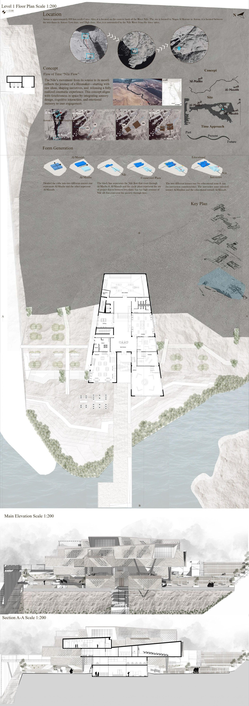
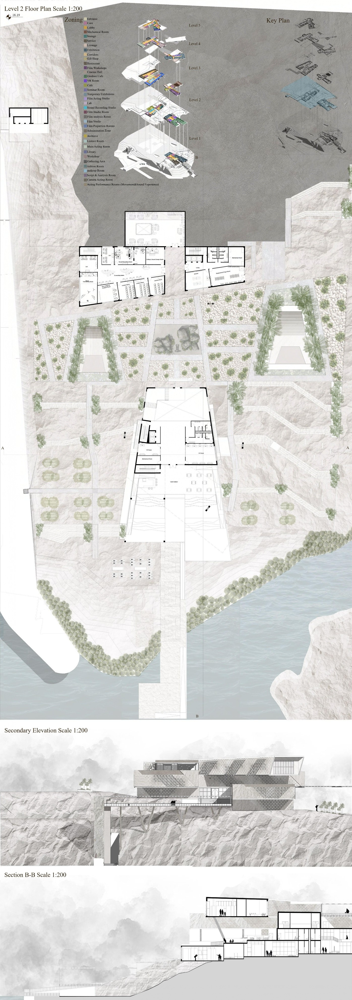
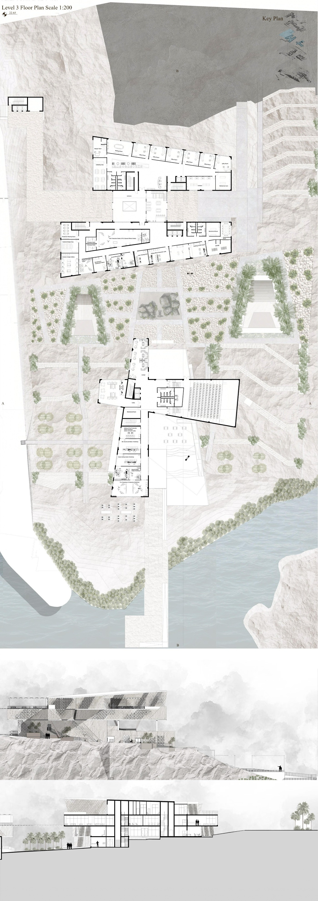
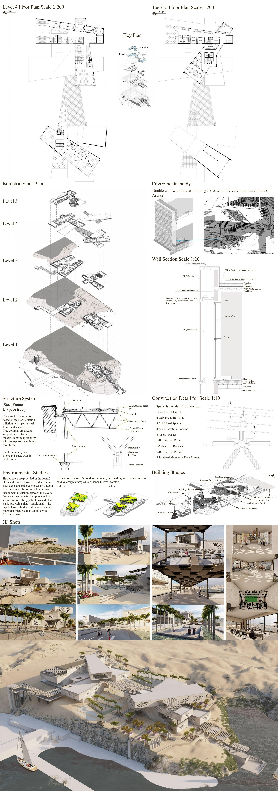
Student project — Fatema el Melegy
Selected among the Top 150 graduation projects in Egypt, 2024/2025 (DESCO)
A cultural centre in Bratislava, conceived as a celebration of the region’s history and heritage. The scheme takes a sensory approach — choreographing light, material, sound and movement so that the building carries cultural memory through direct experience rather than display alone.
Its curved, cast-concrete forms curl around a still reflecting pool set into the landscape, drawing approach and threshold into a slow, deliberate sequence. The project was recognised among the Top 150 graduation projects in Egypt for 2024/2025 in the DESCO showcase.
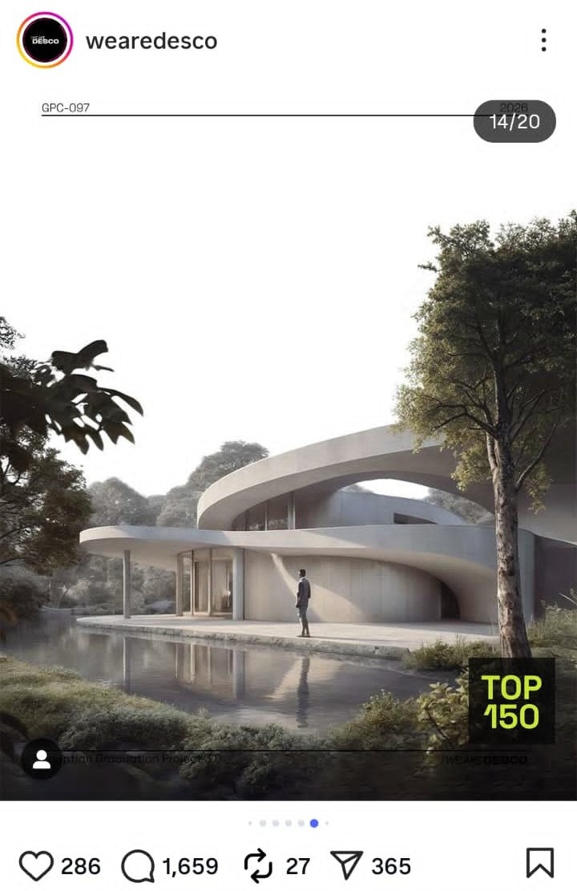
Student project — Lujain ElSherif
ALMAX Fishing Complex sits in El Max, the historic fishing quarter on Alexandria’s western harbour. The project sets out to revive the fishermen’s community there — giving it working quays, market, workshops and shared civic space rather than displacing the fabric that already exists.
Its organising idea is the pixel: a modular grid that scales from the masterplan down to the individual unit, so the complex reads as a field of small, repeatable parts — echoing the dense, incremental grain of the fishing village itself — with circulation, planting and green roofs woven through. Form generation, structure and section carry that same pixel logic from concept to built proposal.
The project boards and renders — click any image to open it full size
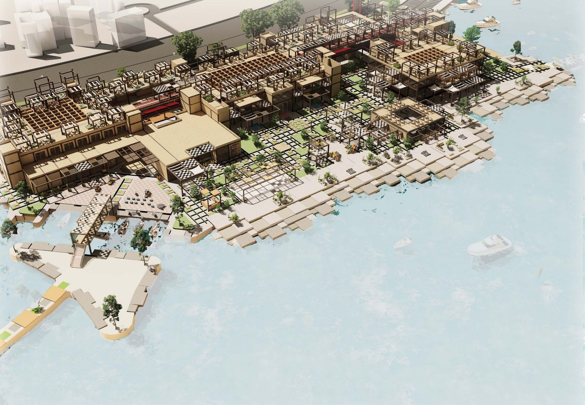
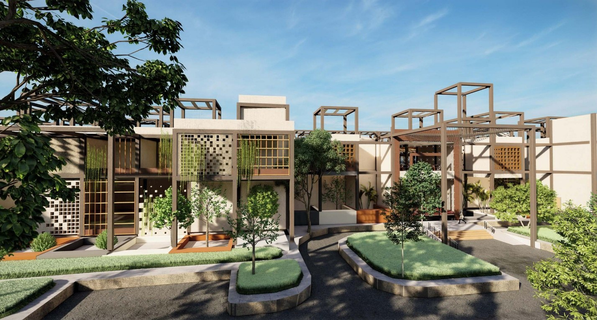
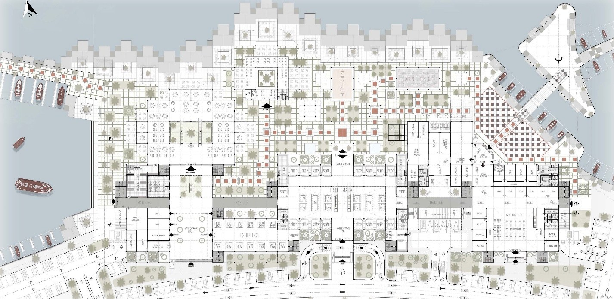
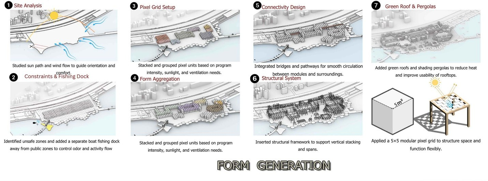
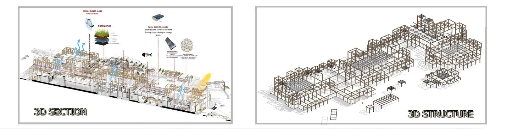